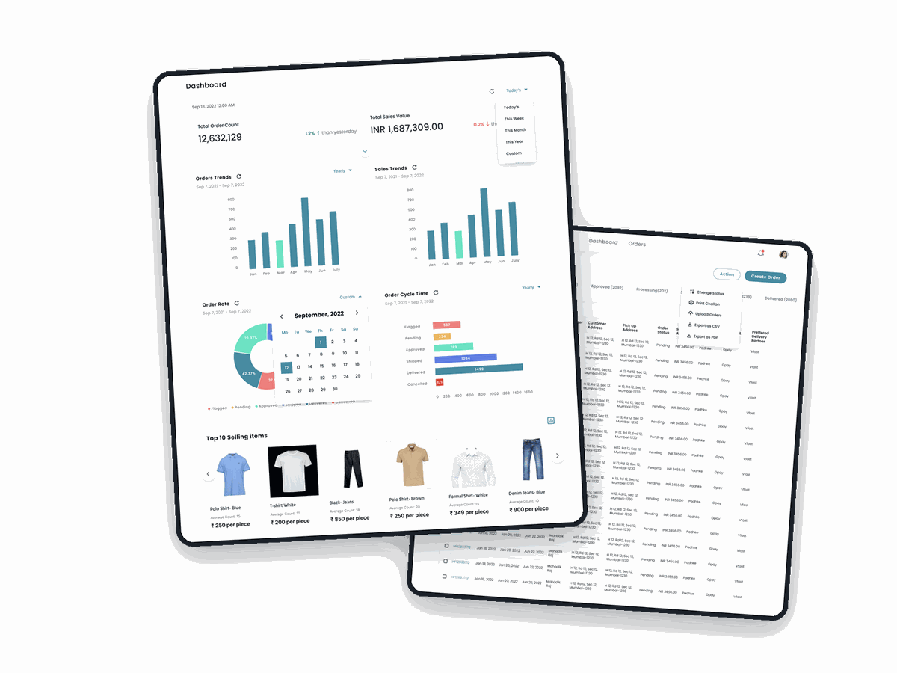
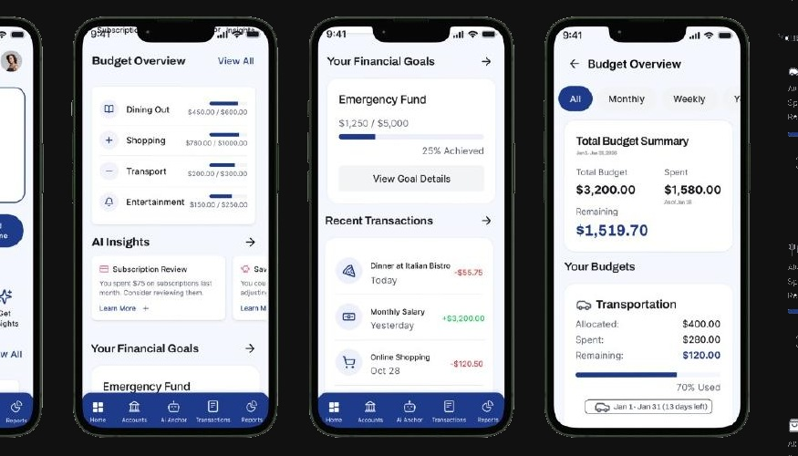
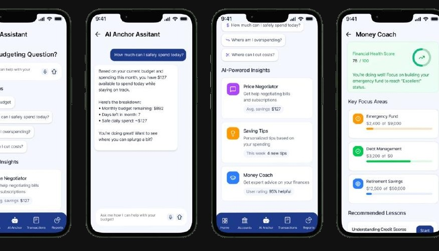
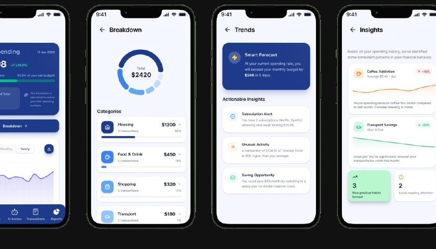
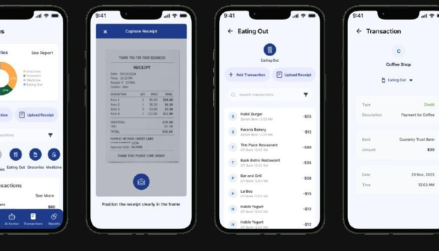
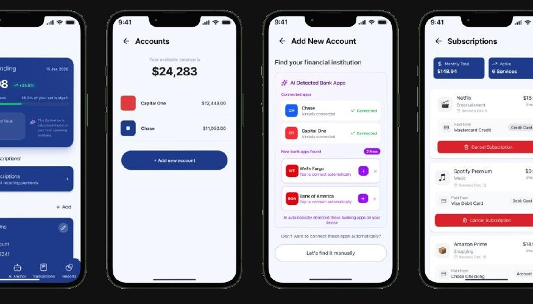

SELECTED WORK
2023 to 2026
Usability from 31.3 to 78.25 on the System Usability Scale
Millions check their refund status on this app at their most anxious moment. I rebuilt the flows and the form so the answer arrives without a phone call.
View case study
100% task success in round two, and 75% trusted the AI once it explained itself
People avoid budgeting apps because they feel like a report card. I designed an AI coach that explains its reasoning, built 0 to 1 from 24 IRB-approved interviews.
View case study
Closing the loop none of the four charging apps closed
First-time EV drivers carry a wallet of charging apps and still get stranded. I designed one flow from finding a working charger to paying for it.
View case study
40% faster workflows and 27% fewer user errors
A B2B supplier ran on phone calls and five disconnected spreadsheets. I designed the dashboard and the component system three teams now use daily.
View case studyGood design ships
and keeps moving.







 Figma
Figma
 Miro
Miro
 Framer
Framer
 Notion
Notion
 Webflow
Webflow
 GitHub
GitHub
 HTML5
HTML5
 CSS3
CSS3
 JavaScript
JavaScript
 Trello
Trello
This site runs on the same discipline
Two typefaces and one locked scale. Colour kept as named tokens with the measured contrast ratio written beside each one in the stylesheet, so nobody later "improves" a value back into failure. Every text and background pair verified against WCAG 2.1 AA before it shipped, the lowest sitting at 4.83:1. Keyboard focus states, a skip link, reduced-motion support, and a pause control on anything that moves. Hand-built in HTML, CSS and JavaScript.
The component libraries behind two products
Money Anchor and Jai Hind Group both shipped on libraries I built rather than on one-off screens. Each defines its type scale, spacing steps and colour as named tokens, then builds every screen from the same components, so a change to a token moves every screen at once instead of thirty files by hand.
Exact component and token counts for both libraries are still being pulled from the Figma files and will be stated here rather than estimated.
The button component as documented for handoff: two variants, four states each, every pair verified against WCAG 2.1 AA before it went to a developer. Disabled is the one state most libraries let fail contrast; it is called out here because it is the one that gets missed.
Making things with intention,
not just attention.


After completing my engineering, I started this journey with questions. "Will I be able to do this?" "Did I make the right choice?" In 2024 I began my master's anyway, and these two years answered me in ways I never expected.
The master's taught me far more than design: creative arts, marketing, web development, data analysis, and human-AI teaming. Every project stretched a different muscle, and somewhere along the way I stopped asking whether I belonged here.
So here is who those two years made me. Professionally, a full-scale designer who can carry a product from research all the way to developer handoff. Personally, a learner who can survive any situation. And the one thing I like most about myself: I love trying new things.
The photobook next to this is proof that I enjoyed every bit of it while learning too. The outings, the food, the little adventures. They all happened between the deadlines.
Siddhi MancheTeaching Assistant · HCD/HCDE University of Michigan
Running weekly design critiques for 30+ students and guiding their work from first research question to final prototype. Most of the role is design review: giving structured, actionable feedback and holding one consistent standard across many designers at once.
UX/UI Design Intern FindMe LLC
Helped build a scalable design system at a fast-moving startup, working on reusable components and patterns and the product flows that used them. Worked directly with developers on implementation, so the system held together in code as well as in Figma.
Product UX Designer Jai Hind Group
My first design role, at a B2B supplier running on phone calls and disconnected spreadsheets. Designed its digital tooling end to end, including the information architecture and the component patterns three teams used daily. VIEW CASE STUDY ↗
This box is waiting for your company's name
Actively looking for a new role. SAY HELLO ↗
Questions recruiters
tend to ask me.
01What kind of role are you looking for?+
A UX role where research actually drives the product, and where the design system is treated as real product work rather than cleanup. Public sector, fintech and B2B are where I have the most to offer, complex, workflow-heavy tools with an accessibility obligation. I'm open to work across the US and happiest on teams that care about the "why" behind every decision.
02Walk me through your design process.+
Research before pixels. I map the problem with interviews, competitive audits, and stakeholder input, then move into ideation, prototyping, and usability testing, usually two rounds. I treat every misclick as a design question, not a user error.
03What's a project you're proud of?+
Money Anchor, an AI budgeting coach we built 0→1. Grounded in IRB-approved research with 24 participants, surfacing the "why" behind AI suggestions pushed user trust to 75%. On IRS2GO, an accessibility-first redesign more than doubled the SUS score and reached full WCAG 2.1 AA.
04How do you work with developers?+
I speak both languages. Coming from an engineering background and knowing HTML, CSS, and JS, my handoffs come with specs, tokens, and zero guesswork, so my designs respect the realities of the people building them.
05How do you use AI in your work?+
Specifically: I use Claude for research synthesis, for exploring directions early, and for documentation. It is fast at clustering interview transcripts into themes I then check by hand against the raw quotes.
Where I do not use it: final visual decisions, information architecture, and deciding what a user should be told. Those are judgement calls that need someone accountable for them, and they are the parts of the job where being confidently wrong is most expensive. I have also designed AI features that explain their own reasoning, which is where the 75% trust figure on Money Anchor came from.
06Why should we hire you?+
I find the signal in the research and make it intuitive. I've watched users call an app easy while the data showed them lost. Closing that gap between perceived and actual usability is where I do my best work.
IN THEIR WORDS…
Siddhi brought a rare mix of curiosity and rigor to our team. She dug into the research, listened carefully to users, and turned messy problems into clear, thoughtful design decisions. She's proactive, easy to collaborate with, and consistently raised the quality of everything she touched.